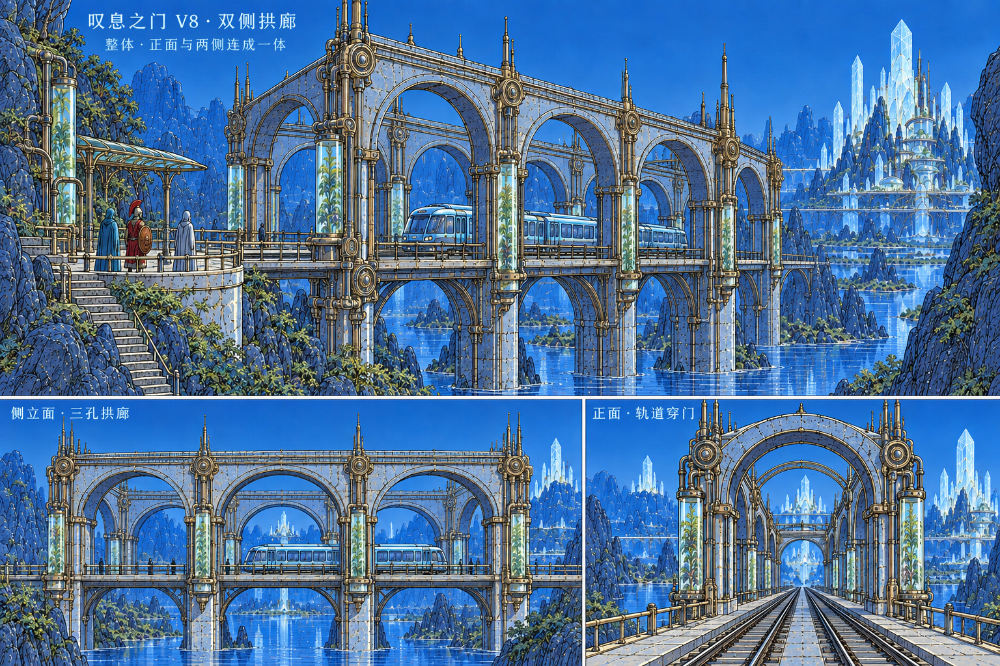

左右各三孔侧拱廊与四站横门连成整体；会面台补支墩、铜栏与玻璃雨棚。模型仍明显简化，尚未达到目标图风格。

已通过局部2880铁路包络射线与原步行解算路线。未完成全场手工剧情、完整防跌落测试或Blender/Godot同步。
水晶城V10：15/30轮实景对照 · 进入真实游戏 · 逐轮证据
 8931真实游戏：整体
8931真实游戏：整体 侧面：连续三孔
侧面：连续三孔 迎面：铁路穿过横门
迎面：铁路穿过横门 原两英雄会面台：支承、三面铜栏、雨棚
原两英雄会面台：支承、三面铜栏、雨棚